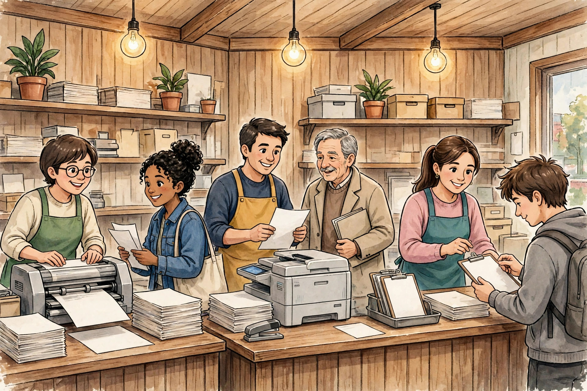

দোকানে কী কী সেবা রাখলে আয় বাড়বে

শুধু জেরক্স-প্রিন্ট দিয়ে আজকাল দোকান চালানো কঠিন। বেশি সেবা = বেশি কাস্টমার = বেশি আয়। নিচে সেই সেবাগুলোর তালিকা দিলাম যেগুলোর চাহিদা সবচেয়ে বেশি।
📝 ১. ফর্ম ফিলাপ সেবা (সবচেয়ে লাভজনক)
- চাকরির ফর্ম: WBPSC, SSC, রেল, পুলিশ — বিজ্ঞপ্তি বেরোলেই ভিড় হয়
- ভর্তির ফর্ম: স্কুল-কলেজে ভর্তির সিজনে প্রচুর কাজ
- সরকারি প্রকল্পের আবেদন: কৃষকবন্ধু, ভাতা, স্কলারশিপের ফর্ম
- পরীক্ষার ফর্ম: মাধ্যমিক-উচ্চমাধ্যমিক, বিভিন্ন বোর্ড
🖨️ ২. প্রিন্ট, জেরক্স, স্ক্যান, ল্যামিনেশন
- সাদা-কালো ও কালার প্রিন্ট
- ডকুমেন্ট স্ক্যান করে PDF/মেইল পাঠানো
- আধার, ভোটার, PAN কার্ড ল্যামিনেশন — রোজকার আয়
📸 ৩. পাসপোর্ট সাইজ ফটো
প্রায় প্রতিটা ফর্মেই ছবি লাগে। দোকানেই ছবি তুলে প্রিন্ট দিতে পারলে কাস্টমার আর কোথাও যাবে না — ফর্ম + ছবি একসাথে!
🪪 ৪. কার্ড সংক্রান্ত সহায়তা
- PAN কার্ড আবেদন ও সংশোধন
- আধার আপডেটে সহায়তা (তথ্য দিয়ে সাহায্য)
- ভোটার কার্ড সংক্রান্ত অনলাইন কাজ
🎫 ৫. টিকিট বুকিং
- ট্রেনের টিকিট (IRCTC) — গ্রামে এর চাহিদা বিশাল
- বাস ও প্লেনের টিকিট
📄 ৬. ডকুমেন্ট তৈরি
- বায়োডাটা/CV বানানো — চাকরিপ্রার্থীদের জন্য
- দরখাস্ত, হলফনামার খসড়া টাইপ
- অনলাইন অভিযোগ/আবেদনপত্র লিখে দেওয়া
💡 ৭. আরও কিছু আইডিয়া
- মোবাইল রিচার্জ ও DTH রিচার্জ (সুবিধা থাকলে)
- অনলাইন শপিংয়ে সাহায্য (বয়স্কদের জন্য)
- ই-মেইল অ্যাকাউন্ট খুলে দেওয়া
🏁 শেষ কথা
একদিনে সব সেবা চালু করতে হবে না। ২-৩টা মূল সেবা (ফর্ম ফিলাপ, প্রিন্ট/জেরক্স, ল্যামিনেশন) দিয়ে শুরু করুন, কাস্টমারের চাহিদা দেখে ধীরে ধীরে বাড়ান। যে সেবায় ভিড় বেশি, সেখানেই আপনার আসল আয়।
✅ সোনালি নিয়ম: যে সেবার চাহিদা বারবার আসে (যেমন ল্যামিনেশন, ফর্ম ফিলাপ), সেটাকে প্রাধান্য দিন। একবারের কাজের চেয়ে নিয়মিত কাস্টমারই দোকানের প্রাণ।🔗 আরও আপডেট পেতে যুক্ত থাকুন
🌐 ওয়েবসাইট: আরও নতুন নতুন তথ্যের জন্য আমাদের ওয়েবসাইট ভিজিট করুন: https://aicombo90.github.io/dafadar-online-seva/ — ওয়েবসাইটটা মোবাইলে সেভ/বুকমার্ক করে রাখুন যাতে হারিয়ে না যায়! পরের বার এলে নতুন তথ্য দেখতে পাবেন।
💬 WhatsApp গ্রুপ: সরকারি প্রকল্প ও চাকরির তাজা আপডেট সবার আগে পেতে আমাদের WhatsApp গ্রুপে যোগ দিন: গ্রুপে যোগ দিন
📺 YouTube: ভিডিওতে দেখতে চান? আমাদের YouTube চ্যানেল সাবস্ক্রাইব করুন: Dafadar Online Seva